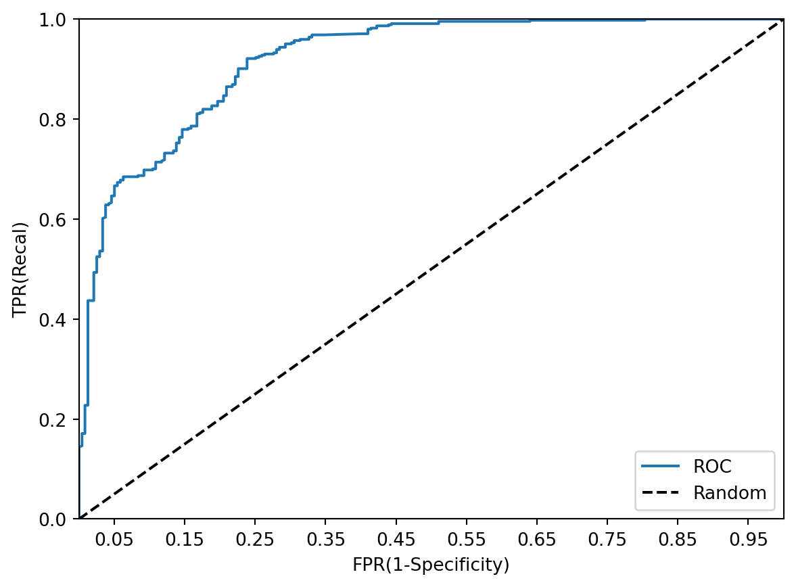

import pandas as pd
import numpy as np
from datetime import datetime
import time
from imblearn.over_sampling import SMOTE,RandomOverSampler
import matplotlib.pyplot as plt
import joblib
import warnings
from sklearn.model_selection import train_test_split,StratifiedKFold,KFold,GridSearchCV
from sklearn.preprocessing import StandardScaler, MinMaxScaler,Normalizer,OneHotEncoder
from sklearn.metrics import accuracy_score,roc_auc_score,confusion_matrix,classification_report, roc_curve
from sklearn import set_config
from sklearn.pipeline import make_pipeline, Pipeline
from sklearn.compose import ColumnTransformer, make_column_transformer
from sklearn.ensemble import RandomForestClassifier
from sklearn.tree import DecisionTreeClassifier
from sklearn.svm import SVC
from xgboost import XGBClassifier,plot_importance
from lightgbm import LGBMClassifier
#from catboost import CatBoostClassifier
warnings.filterwarnings("ignore")7 Tuning & Evaluation - Python
7.1 Evaluation - XGBOOST 모델
Cross Validation 기반하에 채택된 XGBOOST 모델을 평가해 본다.
7.2 Library Loading
7.3 Data Loading
train = pd.read_csv("train_1.csv")
test = pd.read_csv("test_1.csv")
train = train.iloc[:,2:]
test = test.iloc[:,2:]
train['fp2'] = np.where(train['fp2']=="non_detection",0,1)
test['fp2'] = np.where(test['fp2']=="non_detection",0,1)
train["occupancy"] = np.where(train["occupancy"] == "non_detection",0,1)
test["occupancy"]= np.where(test["occupancy"] == "non_detection",0,1)
train_X = train.drop(['occupancy',"weekday"],axis=1)
train_y = train[['occupancy']]
smote = SMOTE(random_state=2023,k_neighbors=7)
train_X,train_y = smote.fit_resample(train_X,train_y)
test_X = test.drop(['occupancy',"weekday"],axis=1)
test_y = test[['occupancy']]7.4 Modeling - XGBOOST
7.4.1 Pipeline - Preprocessing
num_columns = train_X.select_dtypes('number').columns
cat_columns = train_X.select_dtypes('object').columns
num_pipe = Pipeline([("scaler",StandardScaler())])
cat_pipe = make_pipeline(
OneHotEncoder(handle_unknown="ignore",sparse_output=False)
)
preprocess = ColumnTransformer(
[("num_process",num_pipe,num_columns) ,
("cat_process",cat_pipe,cat_columns)], remainder="passthrough"
)7.4.2 Pipeline - Cross Validation
cv = KFold(n_splits=5,shuffle=False)
pipe_xgboost = Pipeline(
[
("preprocess",preprocess),
("classifier",XGBClassifier())
]
)
XGBM_param = {"classifier__learning_rate": np.arange(0.5,1,0.1),
"classifier__n_estimators": np.arange(50,500,50) ,
"classifier__max_depth": np.arange(2,5,1)
}
start_time = time.time()
XGBM_search = GridSearchCV(estimator = pipe_xgboost,
param_grid = XGBM_param,
cv = cv,
scoring = "roc_auc")
XGBM_search.fit(train_X,train_y)
print("\n")
print(f"모델링 적합 시간: {time.time()-start_time}s")
print("\n")
print("---------------------------------------------------------------------------")
print(f"XGBOOST Best Score: {XGBM_search.best_score_}")
print(f"XGBOOST Best Parameters: {XGBM_search.best_params_}")
print("---------------------------------------------------------------------------")
모델링 적합 시간: 149.1704661846161s
---------------------------------------------------------------------------
XGBOOST Best Score: 0.9407269446876632
XGBOOST Best Parameters: {'classifier__learning_rate': 0.6, 'classifier__max_depth': 2, 'classifier__n_estimators': 50}
---------------------------------------------------------------------------7.4.3 Final Modeling
pipe_final = Pipeline(
[
("preprocess",preprocess),
("classifier",XGBClassifier(n_estimators = 50,
learning_rate = 0.6,
max_depth = 2))
]
)
pipe_final.fit(train_X,train_y)Pipeline(steps=[('preprocess',
ColumnTransformer(remainder='passthrough',
transformers=[('num_process',
Pipeline(steps=[('scaler',
StandardScaler())]),
Index(['co2', 'temperature', 'humidity', 'door', 'motion', 'fp2', 'hour',
'discomfort_index', 'co2_rolling_std', 'temperature_rolling_std',
'humidity_rolling_std', 'motion_rolling_std', 'door_rolling_std',
'co2_tempe...
feature_types=None, gamma=None, grow_policy=None,
importance_type=None,
interaction_constraints=None, learning_rate=0.6,
max_bin=None, max_cat_threshold=None,
max_cat_to_onehot=None, max_delta_step=None,
max_depth=2, max_leaves=None,
min_child_weight=None, missing=nan,
monotone_constraints=None, multi_strategy=None,
n_estimators=50, n_jobs=None,
num_parallel_tree=None, random_state=None, ...))])In a Jupyter environment, please rerun this cell to show the HTML representation or trust the notebook. On GitHub, the HTML representation is unable to render, please try loading this page with nbviewer.org.
Pipeline(steps=[('preprocess',
ColumnTransformer(remainder='passthrough',
transformers=[('num_process',
Pipeline(steps=[('scaler',
StandardScaler())]),
Index(['co2', 'temperature', 'humidity', 'door', 'motion', 'fp2', 'hour',
'discomfort_index', 'co2_rolling_std', 'temperature_rolling_std',
'humidity_rolling_std', 'motion_rolling_std', 'door_rolling_std',
'co2_tempe...
feature_types=None, gamma=None, grow_policy=None,
importance_type=None,
interaction_constraints=None, learning_rate=0.6,
max_bin=None, max_cat_threshold=None,
max_cat_to_onehot=None, max_delta_step=None,
max_depth=2, max_leaves=None,
min_child_weight=None, missing=nan,
monotone_constraints=None, multi_strategy=None,
n_estimators=50, n_jobs=None,
num_parallel_tree=None, random_state=None, ...))])ColumnTransformer(remainder='passthrough',
transformers=[('num_process',
Pipeline(steps=[('scaler', StandardScaler())]),
Index(['co2', 'temperature', 'humidity', 'door', 'motion', 'fp2', 'hour',
'discomfort_index', 'co2_rolling_std', 'temperature_rolling_std',
'humidity_rolling_std', 'motion_rolling_std', 'door_rolling_std',
'co2_temperature_interaction', 'co2_humid...
'co2_lag2', 'co2_lag3', 'co2_lag4', 'co2_lag5', 'temperature_lag1',
'temperature_lag2', 'temperature_lag3', 'temperature_lag4',
'temperature_lag5', 'humidity_lag1', 'humidity_lag2', 'humidity_lag3',
'humidity_lag4', 'humidity_lag5'],
dtype='object')),
('cat_process',
Pipeline(steps=[('onehotencoder',
OneHotEncoder(handle_unknown='ignore',
sparse_output=False))]),
Index([], dtype='object'))])Index(['co2', 'temperature', 'humidity', 'door', 'motion', 'fp2', 'hour',
'discomfort_index', 'co2_rolling_std', 'temperature_rolling_std',
'humidity_rolling_std', 'motion_rolling_std', 'door_rolling_std',
'co2_temperature_interaction', 'co2_humidity_interaction', 'co2_lag1',
'co2_lag2', 'co2_lag3', 'co2_lag4', 'co2_lag5', 'temperature_lag1',
'temperature_lag2', 'temperature_lag3', 'temperature_lag4',
'temperature_lag5', 'humidity_lag1', 'humidity_lag2', 'humidity_lag3',
'humidity_lag4', 'humidity_lag5'],
dtype='object')StandardScaler()
Index([], dtype='object')
OneHotEncoder(handle_unknown='ignore', sparse_output=False)
[]
passthrough
XGBClassifier(base_score=None, booster=None, callbacks=None,
colsample_bylevel=None, colsample_bynode=None,
colsample_bytree=None, device=None, early_stopping_rounds=None,
enable_categorical=False, eval_metric=None, feature_types=None,
gamma=None, grow_policy=None, importance_type=None,
interaction_constraints=None, learning_rate=0.6, max_bin=None,
max_cat_threshold=None, max_cat_to_onehot=None,
max_delta_step=None, max_depth=2, max_leaves=None,
min_child_weight=None, missing=nan, monotone_constraints=None,
multi_strategy=None, n_estimators=50, n_jobs=None,
num_parallel_tree=None, random_state=None, ...)7.4.4 Evaluation with Final Model/Test Dataset
pred = pipe_final.predict(test_X)
pred_proba = pipe_final.predict_proba(test_X)[:,1]
print("\n")
print("----------------------------------------------------------")
print("-------------------Major Metrics--------------------------")
print("----------------------------------------------------------")
print(classification_report(test_y,pred))
print("----------------------------------------------------------")
print("\n")
----------------------------------------------------------
-------------------Major Metrics--------------------------
----------------------------------------------------------
precision recall f1-score support
0 0.85 0.73 0.78 239
1 0.86 0.93 0.90 444
accuracy 0.86 683
macro avg 0.86 0.83 0.84 683
weighted avg 0.86 0.86 0.86 683
----------------------------------------------------------
def roc_curve_plot(test_y, pred_proba):
fprs, tprs,thresholds = roc_curve(test_y,pred_proba)
plt.plot(fprs,tprs,label="ROC")
plt.plot([0,1],'k--',label="Random")
start,end = plt.xlim()
plt.xticks(np.round(np.arange(start,end,0.1),2))
plt.xlim(0,1);plt.ylim(0,1)
plt.xlabel('FPR(1-Specificity)'); plt.ylabel('TPR(Recal)')
plt.legend()
plt.show()
print("----------------------------------------------------------")
print("---------------------ROC AUC Score------------------------")
print(f"--------------------{roc_auc_score(test_y,pred_proba)}--------------------")
print("-----------------------ROC Curve--------------------------")
print("----------------------------------------------------------")
roc_curve_plot(test_y,pred_proba)----------------------------------------------------------
---------------------ROC AUC Score------------------------
--------------------0.9191026800859438--------------------
-----------------------ROC Curve--------------------------
----------------------------------------------------------